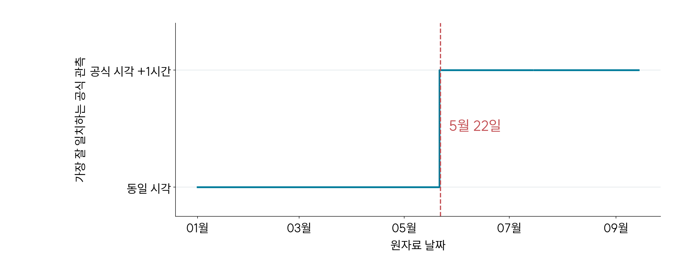
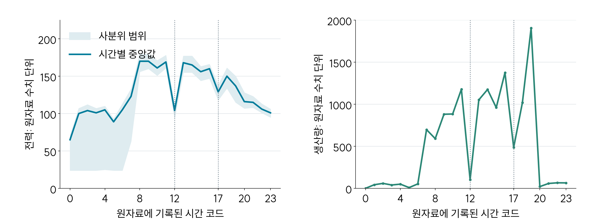
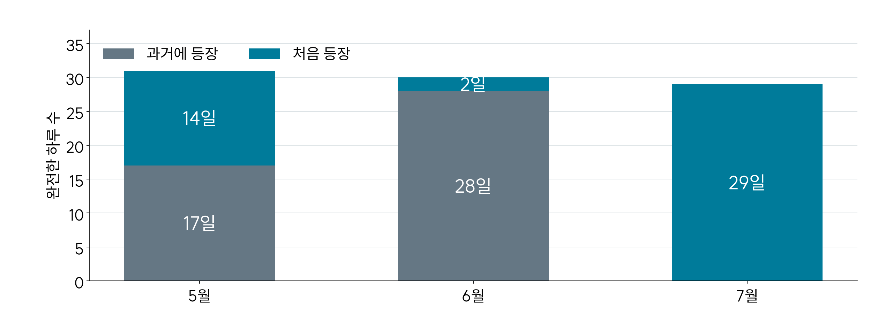
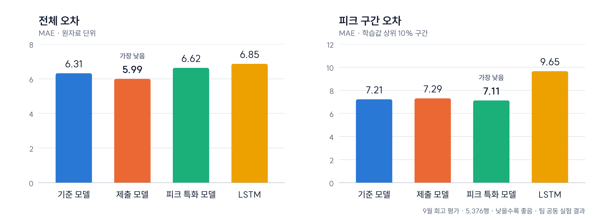
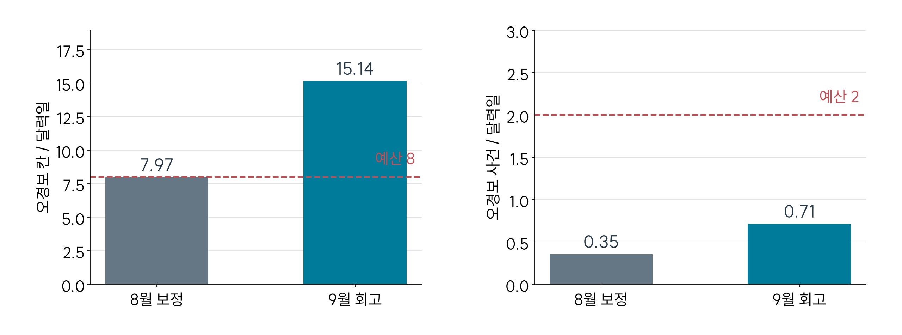
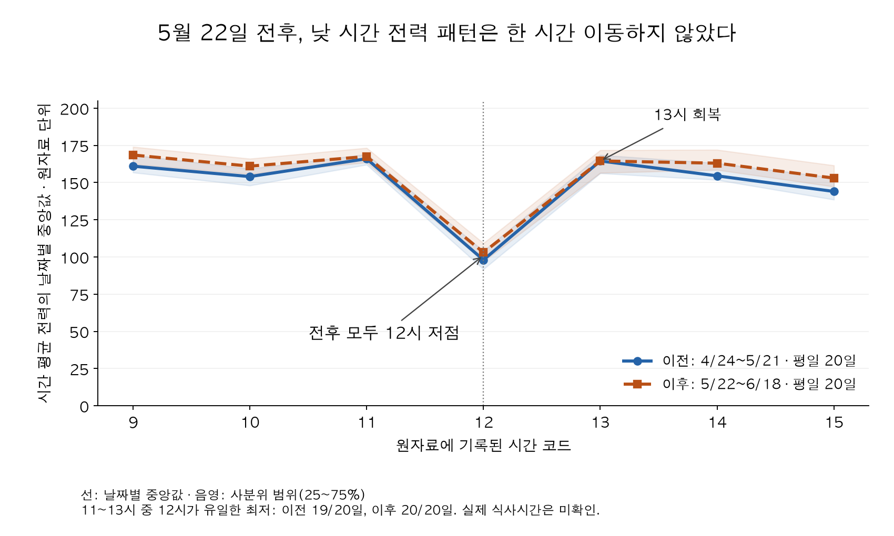
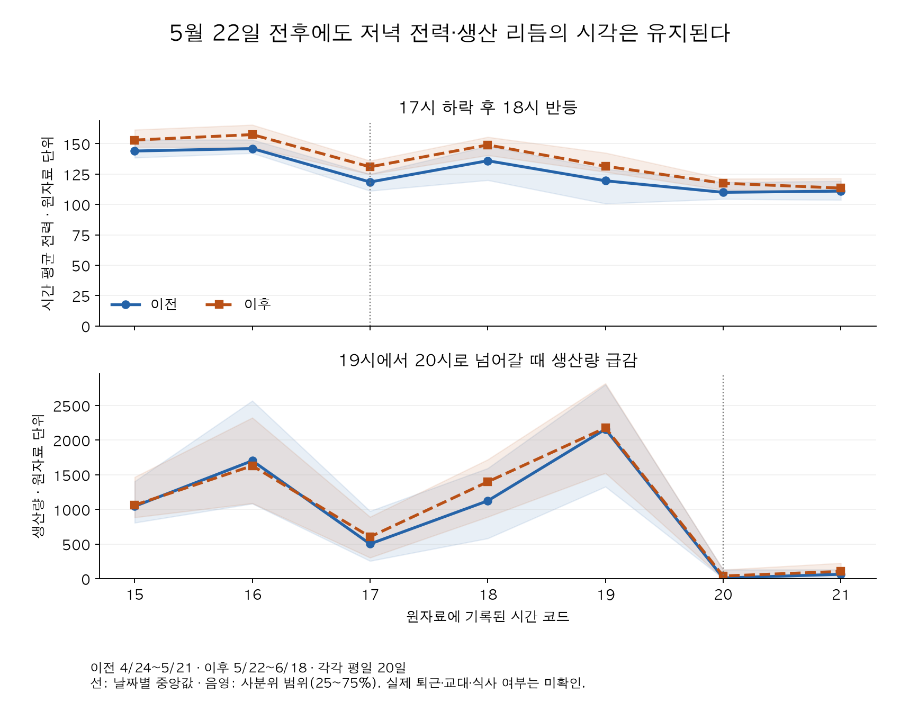
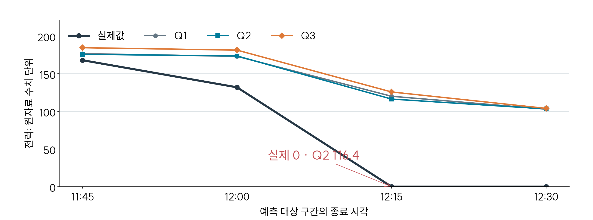
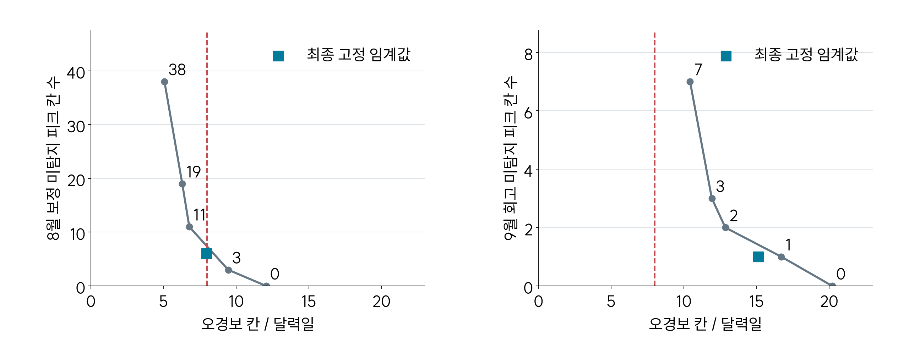

Case Study · 제조 데이터 분석
제조 전력 예측과
피크 사전경보
기상 데이터의 1시간 어긋남을 찾아,
예측에 미래 정보가 섞이는 것을 막았습니다.
제6회 K-인공지능 제조데이터 분석 경진대회 과제로, 공장 전력을 15분 단위로 예측하고 피크 전에 경보하는 모델을 만들었습니다.
- 본인
- 데이터·근무 리듬 분석, 기상 시차 검증, 평가 기준 설계, 팀 결과 통합
- 팀원
- 권동현: 유사일·잔차 접근(참고해 재실험) · 고도현: 분석·보고서 비교
- AI 지원
- Codex·Claude Code로 코드 작성·학습·집계·그림 구현
- 기상 데이터 검증99.84% 일치
울산 공식 관측과 대조해
1시간 시차 발견 (6,107 / 6,117행) - 반복 데이터 발견255일 중
140개 패턴실제로 다른 하루는 140개뿐
처음 보는 패턴의 오차를 따로 평가 - 피크 사전 경보56 / 56건
9월 위험 피크 사건을
모두 15분 전에 경보
01 울산 관측과 대조해 기상의 1시간 시차를 찾았습니다.
기상 결측을 보완하려고 공식 관측 자료를 확보해 울산 ASOS 152의 기온·습도·풍속과 대조했습니다.
- 발견5월 22일부터 원자료 기상이 공식 관측보다 한 시간 앞선 행에 붙어 있었습니다.
- 판단예측 당시에는 알 수 없던 미래 기상값이 입력에 들어간 것입니다.
- 적용공식 관측 시각 기준으로 입력을 다시 연결하고 모델을 재실행했습니다.

| 원자료 시각 | 일치하는 공식 관측 | 일치 행 |
|---|---|---|
| 5/21까지 t시 | 같은 날 t시 | 3,378 / 3,384 |
| 5/22부터 t시 | t+1시 | 2,729 / 2,733 |
02 반복되는 전력 패턴이 작업 리듬인지, 데이터 반복인지 나눠 봤습니다.
① 작업 리듬
평일 181일 중 176일은 12시 전력이 앞뒤 시간보다 낮았습니다(감소율 중앙값 37%).

② 완전히 같은 하루
6월 30일 중 28일이 학습 기간과 96개 전력값이 모두 같은 하루였습니다. 전체 오차만 보면 성능이 부풀려지므로, 처음 보는 패턴의 오차를 따로 평가하도록 기준을 바꿨습니다.

③ 전력에도 시차가 있을까
5월 22일 전후로 점심·저녁 저점이 같은 시각에 유지돼, 전력·생산 열은 옮기지 않았습니다.
03 평가 기준을 정하고 네 모델을 비교했습니다.
저는 처음 보는 패턴과 피크 구간의 오차를 함께 보도록 평가 기준을 정했습니다. 9월 1,344개 구간 × 4개 예측 거리 = 5,376행을 같은 조건으로 비교했습니다.
| 모델 | 전체 오차 (MAE) | 피크 구간 오차 | 큰 오차 |
|---|---|---|---|
| 제출 모델 | 5.988 | 7.295 | 13건 |
| 기준 모델 | 6.311 | 7.211 | 27건 |
| 피크 특화 모델 | 6.622 | 7.112 | 21건 |
| LSTM | 6.854 | 9.646 | 16건 |
제출 모델은 기준 모델보다 전체 오차를 5.1%, 큰 오차를 절반 이하로 줄였습니다. 피크 구간은 피크 특화 모델이 더 정확해 두 결과를 함께 남겼습니다.
회고. 제출 모델은 사전에 정한 교체 기준을 넘지 못했고, 피크 구간 오차는 오히려 늘었습니다. 9월 결과를 보고 고른 선택이라 새 기간에서 다시 검증해야 합니다.

04 피크는 놓치지 않되, 너무 자주 울리지 않게 했습니다.
위험 15분 칸은 189개 중 1개 미탐지
가정한 120분 / 일 예산 초과
경보 칸 정밀도 47.0%
경보 시간을 줄이는 후보는 헛된 경보 횟수를 8월 11회에서 19회로 늘렸습니다. 짧아져도 더 자주 울리면 부담이 줄지 않는다고 보고 기존 경보를 유지했습니다.

모델 선택 과정과 개발 수치
이름 대응: 기준 모델 = Q1(HGB 혼합), 제출 모델 = Q2(LightGBM 혼합), 피크 특화 모델 = Q3(고전력 가중 잔차). 피크 구간은 학습값 상위 10%(9월 기준 169 이상)입니다.
평가 순서: 5~7월 개발 → 1~7월 최종 학습 → 8월 경보 보정 → 9월 회고.
- 01
기준 모델
비교 기준으로 유지
- 시도
- 직접 예측과 유사일·잔차 예측을 50:50으로 혼합했습니다.
- 검증
- 처음 보는 패턴의 개발 MAE 6.632.
- 02
제출 모델 · LSTM
교체 기준 미충족 · LSTM 미채택
- 시도
- 재가동 정보·LightGBM 혼합과 LSTM을 비교했습니다.
- 검증
- 처음 보는 패턴 MAE 0.12% 개선, 그중 피크 구간 14.83% 악화.
- 03
피크 특화 모델
5% 악화 제한 통과
- 시도
- 피크 표본의 학습 가중치를 2배로 둔 잔차 모델.
- 검증
- 기준 모델 대비 처음 보는 패턴의 피크 오차 14.22% 감소, 전체 개발 MAE 2.26% 증가.
- 04
제출 선택
9월 회고까지 고려
- 비교
- 9월 MAE 5.988 / 6.622, 큰 오차 13 / 21건 (제출 / 피크 특화).
- 판단
- 전체 오차와 큰 오차 부담을 보고 제출 모델을 정하고, 피크 특화 결과도 남겼습니다.
사전 교체 기준: 처음 보는 패턴의 MAE가 1% 이상 개선되고, 전체 MAE와 처음 보는 패턴의 피크 오차가 각각 5% 넘게 악화되지 않아야 했습니다.
개발 지표: 기준 → 제출 모델의 처음 보는 패턴 MAE는 6.632 → 6.624, 그중 피크 구간은 11.812 → 13.563입니다. 피크 특화 모델은 11.812 → 10.132, 개발 전체 MAE는 6.488 → 6.635입니다. LSTM 단독은 8.120이며 트리와 섞은 후보도 미채택했습니다.
두 예측의 고정 50:50 평균
원자료 네 전력 열을 15분 시간축으로 펼쳐 발행 후 15·30·45·60분에 끝나는 네 칸을 예측했습니다. 유사일은 발행 당시 관측이 끝난 최근 42일 중 최대 3일에서 골랐고, 미래 목표값·당일 최종 생산량은 쓰지 않았습니다.
추가 검증: 점심·저녁 리듬, 변수 의미, 큰 실패 사례


반복 패턴 상세: 원본 6,168행 중 시간 오류 48행을 격리했습니다. 96개 전력값이 모두 같은 날짜 쌍은 302개이고, 그중 178쌍은 생산량이 달랐습니다. 반복 여부는 채점에만 쓰고 예측 입력에는 넣지 않았습니다.
변수 의미: 인건비(09–17시 1, 그 외 1.5)는 시급 배율로 추정했고, 생산량 ÷ 공장인원이 대부분 정수인 점을 확인했습니다. 정의가 불명확하거나 미래에 알 수 없는 변수는 주요 입력에서 제외했습니다.


팀원 자료와 AI 활용 범위
권동현: 유사일·잔차 아이디어와 최근 42일·최대 3일 기준을 참고해, 발행 당시 관측 가능한 정보만 쓰는 조건에서 다시 실험했습니다. 모든 설정이 최종 채택된 것은 아닙니다.
고도현: 생산 패턴·월별 검증·조건별 오류·일정 제약을 비교했습니다. 최종 보고서에서 참고한 그림은 출처를 표시했고, 이 페이지에는 쓰지 않았습니다.
AI 활용: 전처리·모델·평가·테스트·시각화 코드는 Codex·Claude Code가 작성하고 학습·집계를 수행했습니다. 기상 누출 지적은 공식 시각 대조 결과와 입력 코드를 근거로 두 도구의 의견을 교차검토해 판단했습니다.
역할·참고 접근 정리 (JSON)재현 근거와 해석 범위
발행 이후 전력·생산량을 바꿔도 입력과 LSTM 시퀀스가 변하지 않는지 검사했습니다. 제출 패키지는 99개 테스트와 9월 전력 5,376행·경보 1,343행 재예측으로 검증했고, 저장 예측과의 최대 차이는 약 2.84×10⁻¹⁴입니다.
- 9월은 회고 평가: 이미 탐색한 기간이라 독립 시험으로 해석하지 않습니다.
- 기상: 울산 관측과의 일치가 공장 위치를 확정하지 않습니다. 15분 실험은 관측 후 1시간부터 쓸 수 있다고 가정했습니다.
- 시간·단위: 원자료 시각의 시작·완료 정의와 kW·kWh 단위는 미확인이며, 비용·절감률로 환산하지 않습니다.
- 현장 효과: 아침·점심 후 설비 순차 가동과 작업 분산을 제안했지만, 실제 가동 변경이나 절감은 측정하지 않았습니다.